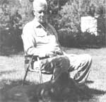
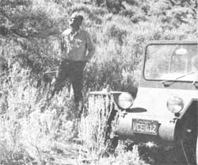

My husband, Al, is a large man. He's 6'5-1/2" tall and-when well-weighs 230 pounds (all muscle, no fat).
The only problem is that, starting in 1950 and for the next 22 years, Al was never really what you could call well. He'd lose his appetite and his weight would sag down to 180. He felt continually fatigued, tense, and irritable. He suffered from night sweats ... often severe ones. He was frequently depressed, sometimes even deeply apathetic. He had headaches, leg, chest, and back muscular pains. His eyesight-even his hair! - changed. Stomach and intestinal gas caused him increasing discomfort. Various small fatty-like nodes began appearing tinder his skin ... and Al experienced increasing cycles of general weakness and malaise.
Since the symptoms of tuberculosis are often quite similar to those that Al was exhibiting, he took tuberculin skin tests ... which proved negative, leaving us right where we had started. Even the various medicos that my husband consulted didn't know what his ailment could be. They wouldn't even hazard a guess!
So Al did what so many people seem to do in a similar circumstance: He took the one-a-day vitamin capsule that our medical establishment claims is all the dietary supplement that anyone eating modern processed food needs . . . and plugged along as best he could on sheer willpower.
And then we discovered Adele Davis's wonderful books on nutrition and the importance of vitamin supplements in our daily food intake. Al increased his dosage of vitamins A, all the B family (including choline, pantothenic acid, and ara-aminobenzoic acid), C, D, and E . . . in addition to liquid lecithin and the potent multi-vitamin perles manufactured by Plus Products under the trade name "Formula 74".
This vitamin therapy helped Al's condition enough to be noticeable ... but not enough to keep him (at age 60) from taking a forced medical separation from his civil service job. We sold our desert home and, hoping that a change in climate might help my husband's condition, moved up into the mountains of northeastern California.
For a while the move, the fresh mountain air, the lessening of tensions, and the stepped-up intake of vitamins seemed to give Al a new lease on life. He rebuilt the old house we had bought, put in a garden, and planted fruit trees. He even opened a small refrigeration business!
Then, after four years in our new home, Al's condition took another turn for the worse. He sought out three more doctors in an attempt to learn why his health was failing. . . again, to no avail.
Finally, when lymph glands-on his neck, under his armpits, and in his groin-began to swell, my husband traveled 600 miles and presented himself to an old doctor friend for an examination.
The diagnosis-in seconds!?was: "You have cancer. I'm afraid it's terminal by now. What ever made you wait so long before getting medical aid?" What could Al say? He had been seeking medical aid for 22 years!
Actually, as we've since learned, my husband's case really hasn't been as unusual as we first thought. We now know that many-not just a few, but many?cancers grow very slowly and quietly for 20 years or more (years during which their victims suffer from hard-to-pinpoint but very real feelings of depression, pain, weakness, etc.) ... before suddenly developing into obvious malignancies-This long, drawn-out, hidden stage of a cancer's growth- furthermore-can become even longer, more drawn-out, and harder to detect if the cancer's host is middle-aged or older.
Al's cancer, then, was far from being a one-of-a-kind malignancy. Quite the opposite! It was actually an almost-ideal textbook example of how this disease develops in a middle-aged or older individual ... and we'd still like to know how so many doctors could have examined my husband without ever suspecting what his real trouble was.
As soon as we did know "the worst", of course, Al's doctor made immediate arrangements for my husband to enter the University of California's Oncology Center at San Francisco for tests, observation, and treatment. There he was once again told that his case was terminal ... and he was started on chemotherapy.
Miraculously, even though the treatments made him very ill, Al experienced a clinical remission of his cancer after only two weeks! We continued the chemotherapy for another seven months, however, just to "clinch" the "cure". Al was then allowed to rest for several months before a final series of radiation treatments that would "kill off" any lurking cancer cells that might still be hidden in his body.
Alas. The radiation weakened him ... and Al could feel himself sliding downhill once again.
It was at just this time that we read of Dr. Linus Pauling's success in fighting cancer and other diseases with massive doses of vitamin C (see The Plowboy Interview in MOTHER NO. 49 for Dr. Pauling's own thoughts about this work). "Surely," we told each other, "this distinguished scientist-the only man ever to be awarded two unshared Nobel Prizes-must know what he's talking about. Surely it won't hurt to at least give his vitamin C therapy a try."
Al began experimenting with both Dr. Pauling's massive doses of vitamin C and comparable intakes of other vitamins and minerals (everything he thought he'd need to rebuild his body and keep it healthy). After adjusting several such therapies for his own height and weight, he soon settled on the following self-treatment:
VITAMIN A: 25,000 U.S.P. Units (1 daily. These can be toxic, so he only maintains this intake for a few days ... then lets up ... then continues the dosage again a few days later, etc. 1. VITAMIN B1: 25 mg (3 daily). VITAMIN B2: 25 mg (3 daily). VITAMIN B6: 25 mg (3 daily). VITAMIN B12: 25 mcg as in Streptomyces Fermentation Extractive activity from Cobalamin Concentrate, plus 6-1/2 grains of brewer's yeast (6 dai*). CHOLINE: 7-1/2 grains (3 daily, with meals). PANTOTHENIC ACID: 50 mgs (3 daily). PARA-AMINOBENZOIC ACID: 30 mgs (3 daily). NIACINAMIDE: 100 mgs (1 daily). VITAMIN C: 16 grams (160,000 mgs, divided into three daily doses). VITAMIN D: 10,000 U.S.P. Units (I daily for a few days, then a break, then 1 daily again for a few days ... just as with vitamin A). VITAMIN E: Mixed tocopherols, 400 International Units (6 in the morning and 6 in the afternoon). DOLOMITE AND BONE MEAL TABLETS: 1,287 mgs calcium, 303 mgs magnesium, and 294 mgs phosphorus (24 daily). POTASSIUM AND IODINE: 75 mgs potassium chloride and 0.15 mgs kelp iodine (3 daily, one after each meal). ZINC: 10 mgs (1 daily). LIQUID LECITHIN: 1 tablespoon after each meal.
In addition to the above, Al goes to a good doctor in town once a week for a vitamin B12 shot. And when he thinks he needs the boost, he drinks a quart of Adele Davis's famous protein drink, Tiger's Milk.
If you've never tried it, Tiger's Milk is made by blending together- preferably in a liquefier-one-half cup of banana, crushed or chunk pineapple, berries, or other fruit ... two tablespoons of soy, safflower, or other vegetable oil ... one or two cups of fresh skim milk ... one-half cup of non-instant, powdered skim milk ... and one-half cup of brewer's yeast. One teaspoon of vanilla can also be thrown in for flavoring and-when the mixture is smooth-add two or three more cups of fresh skim milk (enough to make a total of one quart of milk in the blend).
If you don't care for the taste of this basic recipe, you can vary it by substituting other fruits, undiluted frozen orange juice, or one to two tablespoons of blackstrap molasses for the fruits mentioned above. Al, for instance, blends up his drink from either one quart of non-fat milk or fruit juice, a heaping tablespoon of lecithin/papaya enzyme, a heaping tablespoon of blackstrap molasses, and a heaping tablespoon of flaked yeast with calcium and magnesium. He whips it all together in the blender and drinks it whenever he thinks he needs a boost from this high-protein pick-me-up.
Then-to top off all the vitamins, minerals, and Tiger's Milk I've already described-my husband takes another three multi-vitamin perles (supplemented with chelated minerals) every day. These perles (one with each meal) contain equal potencies of natural vitamins A, B1, B2, B6, D, and E in oil form and calcium and magnesium in a two-to-one ratio.
As far as we know, this massive intake of vitamins and minerals is NOT a cancer cure. We DO know, however, that Al's cancer was diagnosed as "terminal" twice and that the "conventional" radiation treatments he took for the disease seemed to do more harm than good. We also Do know that Al's health has dramatically improved since he began his vitamin therapy, and we feel certain that he'd never have lived these last five precious years without his vitamin therapy. We hope and pray he has another five years of grace ahead of him.
I've been taking many of the vitamins and minerals that my husband takes and-whether or not his self-administered therapy has actually halted the development of his cancer-we do know one thing: 50 mgs of pantothenic acid and 30 mgs of para-aminobenzoic acid taken three times a day (once with each meal) definitely will turn gray and graying hair back to its original color.
Pantothenic acid and para-aminobenzoic acid, at least, most certainly have worked this miracle for us. As soon as we began taking them, we noticed that our hair was gradually darkening ... darkening ... darkening ... until, finally, it was almost its old color. What a happy surprise! We're not gray anymore ... but the change came from "panto" and "PABA" vitamins ... not a dye bottle! -DR.
|
 |
 |
|